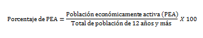
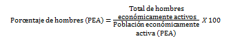
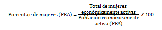
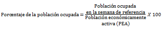
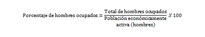
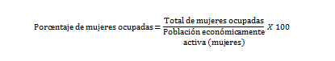
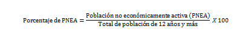
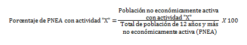
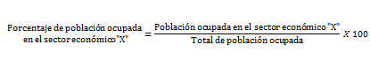

Es el cociente de la población económicamente activa1(PEA) entre el total de la población de 12 años, expresado por cada cien.
A este indicador se le conoce también como tasa de participación económica.
Este indicador se presenta para el total de la población de 12 años y más, y su distribución por sexo.
 1Son las personas de 12 años y más que durante el periodo de referencia tuvieron o realizaron alguna actividad económica (población ocupada) o buscaron activamente realizar una.
Es la población económicamente activa que se encontraba ocupada en la semana de referencia respecto al total de la población económicamente activa, expresada por cada cien. Este indicador también se conoce como tasa de ocupación.
Este indicador se presenta para el total de la población de 12 años y más, y por separado para los hombres y las mujeres del mismo rango de edad.
 Es la población no económicamente activa2(PNEA) entre el total de la población de 12 años y más, expresada por cada cien.
2Población de 12 años y más que en la semana de referencia no realizó alguna actividad económica ni buscó trabajo
Es la población no económicamente activa de acuerdo con su actividad, entre el total de la población de 12 años y más no económicamente activa, expresada por cada cien.
Donde "X" se refiere a alguna de las siguientes actividades:
Es la población que no especificó condición de actividad económica.
Es la población ocupada de acuerdo con su sector de actividad económica entre el total de la población ocupada, expresada por cada cien.
Donde “X” se refiere a alguno de los siguientes sectores de actividad económica:
Fuente:INEGI. Encuesta Intercensal 2015.
Nota:Los indicadores presentados son estimadores obtenidos a partir de la Encuesta Intercensal 2015.